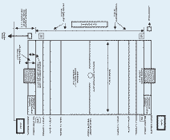
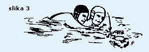
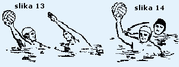

Vaterpolo pravila
Ovo su službena vaterpolo pravila donesena od strane F.I.N.A.-e 1998., uz dodatak sa SP Fukuoka 2001.
WP 01 Igralište i oprema:
WP 1.1 Organizator je odgovoran za ispravne mjere i oznake igrališta i mora osigurati sve propisane naprave i opremu.
WP 1.2 Nacrt i oznake na igralištu, kada utakmicu sude dva suca, moraju biti
prema sljedećoj shemi:

{kind=link}
WP 1.3 Kada utakmicu sudi jedan sudac mora se kretati na istoj strani gdje je zapisnički stol, a gol suci moraju zauzeti mjesto na suprotnoj strani.
WP 1.4 Razmak između gol crta ne može biti manji od 20 m, niti veći od 30 m. Širina igrališta ne može biti manja od 10 m, niti veća od 20 m. Udaljenost crte igrališta mora biti 0,30 m iza gol crte na svakoj strani. Minimalna udaljenost od zida bazena iznosi 1,66 m.
WP 1.5 Za FINA takmičenja dimenzija igrališta, dubina i temperatura vode kao i rasvjeta moraju biti kako je predviđeno u FR 7.2, FR 7.3, FR 7.4 i FR 8.3.
FR 7.2. Igralište za muškarce: udaljenost između odgovarajućih gol crta mora biti 30 m. Širina mora biti 20 m. Dubina vode ne smije nigdje biti manja od 1,80 m, a preporuča se 2,00 m.
FR 7.3. Igralište za žene: za utakmice koje igraju žene dimenzije igrališta moraju biti 25 x 17 m. Dubina vode ne smije biti manja od 1,80 m, a preporučljiva je 2,00 m.
FR 7.4. Temperatura vode mora biti 26 +/- 1 °C.
FR 7.5. Rasvjeta ne smije biti manja od 600 luxa.
FR 7.6. Odstupanja od FR 7.2 i 7.3 su dozvoljena odlukom Saveza koji rukovodi takmičenjem.
FR 8.3. Za Olimpijske igre, Svjetska prvenstva i FINA takmičenja rasvjeta ne smije biti manja od 1.500 luxa.
WP 1.6 Vidljive oznake moraju biti postavljene na obje strane igrališta a označavaju sljedeće:
- bijele oznake - gol crta i polovina igrališta
- crvene oznake - crta 2 m
- žute oznake - crta 4 m
- zelene oznake - crta 7 m
WP 1.7 Crvena oznaka mora biti na svakom kraju igrališta, 2 metra od kuta na suprotnoj strani od zapisničkog stola, da označava mjesto za ponovni ulaz igrača u igru.
WP 1.8 Mora se osigurati dovoljno prostora da se omogući sucima slobodno kretanje od jednog do drugog kraja igrališta. Potrebno je osigurati prostor i kod gol crta za gol suce.
WP 1.9 Tajnik (zapisničar) mora imati odvojene bijelu, plavu i crvenu zastavicu, svaka veličine 0,35 x 0,20 m.
WP 02 Golovi:
WP 2.1 Dvije stative i greda tvrde konstrukcije, pravokutnog oblika, veličine 0,075 m na strani prema igralištu, obojene bijelo, moraju biti smještene na gol crtama na krajevima igrališta, jednako udaljene od aut-linija i najmanje 0,30 m ispred krajnjih crta igrališta.
WP 2.2 Unutrašnji razmak stativa mora biti 3,00 m. Kada je dubina vode 1,50 m ili više, donja strana grede mora biti 0,90 m iznad površine vode. Kada je dubina vode manja od 1,50 m, donja strana grede mora biti 2,40 m od dna bazena.
WP 2.3 Zategnute mreže moraju biti sigurno pričvršćene za stative i gredu i moraju zatvarati cijeli gol ostavljajući razmak iza gol crta ne manji od 0,30 m.
WP 03 Lopta:
WP 3.1 Lopta mora biti okrugla sa zračnom komorom koja ima samozatvarajući ventil. Mora biti nepromočiva, bez vanjskih šavova, bez premaza masti ili sličnih smicalica.
WP 3.2 Težina lopte mora biti od 400 do 450 grama.
WP 3.3 Za muški vaterpolo obujam lopte mora biti od 0,68 do 0,71 m, a pritisak u lopti od 90 do 97 kPa (13 - 14 psi).
WP 3.4 Za ženski vaterpolo obujam lopte mora biti od 0,65 do 0,67, a pritisak u lopti od 83 do 90 kPa (12 - 13 kPa).
WP 04 Kapice:
WP 4.1 Kapice moraju biti različite boje, osim potpuno crvene, uz odobrenje
sudaca, ali također različite od boje lopte. Ekipa može zatražiti od sudaca
da stave bijele ili plave kapice. Golmani moraju nositi crvene kapice.
Kapice moraju biti vezane konopcem ispod brade, a ako igrač izgubi svoju kapicu
za vrijeme igre, mora je zamijeniti kod prvog prikladnog prekida igre kada
je njegova ekipa u posjedu lopte.
WP 4.2 Za Olimpijske igre, Svjetska prvenstva i ostala FINA takmičenja kapice moraju imati savitljiv štitnik za uši. Preporučuje se da se takve kapice upotrebljavaju za sva ostala takmičenja. Štitnici za uši moraju biti iste boje kao kapice, s tim da vratar smije imati crvene štitnike.
WP 4.3 Kapice moraju imati brojeve s obje strane, visine 0,10 m. Golman nosi kapicu s brojem 1, a ostale kapice imaju brojeve od 2 do 13. Zamjena vratara mora nositi vratarsku kapicu. Ni jedan igrač ne smije promijeniti svoj broj kapice za vrijeme igre, osim sa dozvolom suca i najavom zapisničaru.
WP 4.4 Za međunarodne utakmice kapice moraju na prednjoj strani imati međunarodnu slovnu oznaku (tri slova) i smiju imati nacionalnu zastavu. Visina slovne oznake ne smije biti manja od 0,06 m.
WP 05 Ekipe i zamjene:
WP 5.1 Svaka ekipa sastoji se od 7 igrača, od kojih 1 mora biti vratar koji
nosi vratarsku kapicu, i ne više od 6 rezervnih igrača koji se mogu prema
potrebi zamjenjivati.
Od ekipe koja igra sa manje od 7 igrača ne smije se zahtijevati da ima vratara.
WP 5.2 Rezervni igrači, zajedno sa trenerima i službenim osobama ekipa moraju zajedno slijediti na klupi i ne smiju napuštati klupu od početka igre, osim između četvrtina. Ekipe moraju promijeniti strane i klupe u poluvremenu i prije početka nastavka prvog produžetka. Obje klupe su smještene na suprotnoj strani od zapisničkog stola.
WP 5.3 Kapetani moraju igrati i oni su odgovorni za dobro ponašanje i disciplinu ekipe.
WP 5.4 Igrači moraju nositi neprozirne kupaće gaćice ili kostime s posebnim dodatkom. Prije ulaska u igru moraju odstraniti sve predmete koji mogu prouzrokovati povrede.
WP 5.5 Igrači ne smiju biti namazani po tijelu mašću ili nekim sličnim sredstvom.
Ako sudac prije početka utvrdi da je upotrebljavano to sredstvo, mora narediti
da se isto odmah odstrani. Početak utakmice se ne smije odložiti da bi se
sredstvo odstranilo.
Ako se ovaj prekršaj utvrdi poslije početka igre, taj igrač mora biti isključen
do kraja utakmice, a zamjena može ući odmah u igru na mjestu za ulazak kod
vlastite gol crte.
WP 5.6 U svako vrijeme tokom igre igrač smije biti zamijenjen nakon što je napustio igralište na mjestu za ponovni ulazak kod vlastite gol crte. Zamjena smije ući u igralište sa mjesta za ponovni ulazak čim igrač vidljivo dopliva na površinu vode u prostoru za ponovni ulazak.
WP 5.7 Ako drugačije nije predviđeno pravilima, igrač smije biti zamijenjen jedino:
a) za vrijeme odmora između četvrtina i bilo kojeg nastavka produžetka
b) nakon postignutog pogotka
c) za vrijeme time out-a
d) ako krvari ili je povrijeđen
WP 5.8 Zamjena mora biti spremna ući u igru bez odugovlačenja. Ukoliko zamjena nije spremna, igra će se nastaviti bez njega, a on može ući u svako vrijeme sa mjesta za ponovni ulazak kod vlastite crte gola.
WP 5.9 Vratar koji je zamjenjen, ukoliko se vrati u igru, smije igrati na bilo kojem mjestu.
WP 5.10 Ukoliko se vratar mora povući iz igre zbog zdravstvenih razloga, suci moraju dozvoliti da ga odmah zamijeni jedan od igrača, koji će staviti vratarsku kapicu.
WP 06 Službene osobe:
WP 6.1 Za FINA takmičenja službene osobe su dva suca, dva gol suca, mjeritelji
vremena i zapisničari, svaki sa sljedećim pravima i dužnostima.
Navedene službene osobe trebaju biti prisutne uvijek kada je moguće i za ostala
takmičenja osim, na utakmicama koje sude dvojica sudaca bez gol sudaca. Tada
suci moraju preuzeti njihova prava i dužnosti (bez navedenih davanja specifičnih
znakova) kao što stoji u WP 8.2 za gol suce.
[Napomena]: Ovisno o stupnju važnosti, utakmice mogu voditi četiri do osam
službenih osoba, kako slijedi:
(a) Suci i gol suci: Dvojica sudaca i dvojica gol sudaca ili dvojica sudaca bez gol sudaca ili jedan sudac i dvojica gol sudaca.
(b) Mjeritelji vremena i zapisničari:
- Sa jednim mjeriteljem vremena i jednim zapisničarom:
Mjeritelj vremena mora mjeriti vrijeme neprekidnog posjeda lopte za svaku ekipu kako je opisano WP 20.17. Zapisničar mora mjeriti točno vrijeme trajanja čiste igre, "time out-a" i odmore između pojedinih četvrtina. Također mora mjeriti vrijeme trajanja isključenja igrača koji su isključeni iz igre prema pravilima. Mora voditi zapisnik utakmice kao što je navedeno u WP 10.1. - Sa dva mjeritelja vremena i jednim zapisničarom:
Mjeritelj vremena br.1 mora mjeriti točno vrijeme trajanja čiste igre i odmore između pojedinih četvrtina. Mjeritelj vremena br. 2 mora mjeriti vrijeme neprekidnog posjeda lopte, za svaku ekipu, kako je opisano u WP 20.17. Zapisničar treba voditi zapisnik utakmice i obavljati sve dužnosti navedene u WP 10.1. - Sa dva mjeritelja vremena i dva zapisničara:
Mjeritelj vremena br.1 mora mjeriti točno vrijeme trajanja čiste igre, "time out-a" i odmore između pojedinih četvrtina. Mjeritelj vremena br. 2 mora mjeriti vrijeme neprekidnog posjeda lopte za svaku ekipu kako je opisano u WP 20.17. Zapisničar br. 1 mora voditi zapisnik utakmice kao što je navedeno u WP 10.1. (a). Zapisničar br. 2 mora obavljati dužnosti navedene u WP 10.1 (b),(c) i (d), a koje se odnose na nepravilan ponovni ulazak isključenog igrača, nepravilan ulazak zamjene, isključenje igrača i treću osobnu grešku.
WP 07 Suci:
WP 7.1 Suci moraju imati potpunu kontrolu igre. Njihova nadležnost nad igračima mora trajati sve vrijeme dok se oni i igrači nalaze na plivalištu. Sve odluke sudaca po praktičnim pitanjima moraju biti konačne i njihova tumačenja pravila moraju biti obavezna za vrijeme utakmice. Suci ne smiju pretpostaviti stvarne događaje, ali moraju tumačiti ono što je uočeno na način kako najbolje znaju.
WP 7.2 Suci moraju dati znak zviždaljkom za početak i ponovni početak igre, dosuđivati pogotke, vratarska bacanja, izvođenja kornera bez obzira da li su gol suci dali znak ili ne), neutralna bacanja i prekršaje pravila igre. Sudaca smije promijeniti svoju odluku, pod uvjetom da to učini prije nastavka igre.
WP 7.3 Suci moraju propustiti dosuditi pojedini prekršaj, ako bi to po njihovom
mišljenju bila prednost ekipi koja je prekršaj učinila. Suci ne smiju dosuditi
običan prekršaj kada još postoji mogućnost igranja loptom.
[Napomena: Suci moraju ovaj princip primjenjivati u punoj mjeri. Na primjer,
ne smiju dosuditi prekršaj u korist igrača koji je u posjedu lopte i napreduje
prema protivničkom golu, jer se to smatra davanjem prednosti ekipi koja je
taj prekršaj učinila.]
WP 7.4 Suci imaju ovlaštenje svakog igrača isključiti iz igre u skladu sa odgovarajućim pravilom. Ukoliko igrač odbije izaći iz igre, igra se mora prekinuti.
WP 7.5 Suci imaju ovlaštenje udaljiti svakog igrača, zamjenu, gledatelja ili službenu osobu sa prostora bazena ako ponašanje istih onemogućava izvršenje njihovih obaveza na pravilan i nepristran način.
WP 7.6 Suci imaju ovlaštenje zaustaviti utakmicu u bilo koje vrijeme, ako po njihovom mišljenju ponašanje igrača, gledatelja ili druge okolnosti ne dozvoljavaju da se utakmica pravilno završi. Ako je utakmica prekinuta, suci moraju izvijestiti nadležni organ o svom postupku.
WP 08 Gol suci:
WP 8.1 Gol suci moraju zauzeti mjesta na strani zapisničkog stola na gol crti, na krajevima igrališta.
WP 8.2 Dužnosti gol sudaca su:
(a) dati znak podizanjem ruke u okomitom položaju kada su igrači pravilno zauzeli mjesto na gol crti na početku četvrtine
(b) dati znak podizanjem obje ruke u okomitom položaju za nepravilan početak ili ponovni početak
(c) pokazujući rukom u vodoravnom položaju u pravcu napada za vratarsko bacanje
(d) pokazujući rukom u vodoravnom položaju u pravcu napada za izvođenje kornera
(e) dati znak podizanjem i ukrštanjem obje ruke u okomiti položaj za pogodak
(f) dati znak podizanjem obje ruke u okomiti položaj za nepravilan ulazak isključenog igrača ili njegove zamjene.
WP 8.3 Svaki gol sudac mora biti snabdjeven sa dovoljnim brojem lopti i kada lopta kojom se igra napusti igralište, odmah mora drugu loptu dodati vrataru (za vratarsko bacanje) ili najbližem igraču ekipe u napadu (za izvođenje kornera). Isto mora učiniti i po nalogu suca.
WP 09 Mjeritelji vremena:
WP 9.1 Dužnosti mjeritelja vremena su:
(a) mjeriti točno vrijeme čistog trajanja igre, "time out-a" i odmora između četvrtina
(b) mjeriti vrijeme neprekidnog posjeda lopte za svaku ekipu
(c) mjeriti vrijeme trajanja isključenog igrača u skladu sa pravilima kao i objaviti vrijeme ponovnog ulaska isključenih igrača ili njihovih zamjena
(d) razgovijetno objaviti početak zadnjeg minuta utakmice i zadnjeg minuta drugog nastavka produžetka
(e) zviždaljkom označiti 45 sekundi i kraj svakog "time out-a".
WP 9.2 Mjeritelj vremena mora dati znak zviždaljkom (ili drugim uređajem posebno jakog zvuka koji se odmah prepoznaje) za završetak svake četvrtine nezavisno od sudaca. Njegov znak neposredno prekida igru, osim u slučajevima:
(a) kada sudac istovremeno dosudi kazneni udarac. Tada se mora izvesti kazneni udarac prema pravilima
(b) kada je lopta u letu prema golu i prelazi gol crtu. Tada se mora priznati pogodak.
WP 10 Zapisničari:
WP 10.1 Dužnosti zapisničara su:
(a) voditi zapisnik utakmice, što uključuje igrače, rezultat, time out, sve prekršaje za isključenje, prekršaje za kaznene udarce, kao i osobne greške dosuđene svakom igraču
(b) kontrolirati vrijeme trajanja isključenja igrača i davati znak za istek vremena isključenja dizanjem odgovarajuće zastavice osim kada sudac mora dati znak za ponovni ulazak isključenom igraču ili zamjeni kada njegova ekipa dođe u posjed lopte
(c) davati znak crvenom zastavicom i zviždaljkom za svaki nepravilan ponovni ulazak isključenog igrača ili nepravilan ulazak zamjene (uključujući i podizanje ruku gol suca za nepravilan ponovni ulazak ili ulazak) čiji znak mora odmah zaustaviti igru
(d) davati znak, bez odlaganja, za treću osobnu grešku kako slijedi:
(I) sa crvenom zastavicom ako je treća osobna greška
(II) sa crvenom zastavicom i zviždaljkom ako je prekršaj za kazneni udarac treća osobna greška.
WP 11 Trajanje igre:
WP 11.1 Trajanje igre mora biti 4 četvrtine po 7 minuta čiste igre.
Vrijeme početka igre mora biti trenutak kada igrač dotakne loptu na početku
svake četvrtine.
Kod svih znakova za prekid, mjerni sat mora se zaustaviti dok lopta nije vraćena
u igru, napuštanjem ruke igrača koji izvodi odgovarajuće bacanje ili kada
loptu dotakne igrač nakon neutralnog bacanja.
WP 11.2 Između svake četvrtine odmor mora trajati 2 minute.
Ekipe, uključujući igrače, trenere, službene osobe moraju zamijeniti strane
prije početka treće četvrtine i prije prvog nastavka bilo kojeg produžetka.
WP 11.3 Kada je rezultat utakmice neriješen nakon isteka vremena u bilo kojoj
utakmici za koju je potreban odlučujući rezultat, mora se igrati produžetak
nakon odmora od 5 minuta. Igrati će se 2 nastavka po 3 minuta čiste igre sa
prekidom od 1 minute kako bi suci promijenili strane.
Ako je rezultat na kraju dva nastavka produžetka neriješen, moraju se izvesti
kazneni udarci (četverci) kako bi se odredio rezultat.
[Napomena: Ukoliko dođe do izvođenja kaznenih udaraca, svaka od ekipa mora
izvesti po 5 kaznenih udaraca na protivnički gol naizmjeničnim redom. Prva
ekipa mora izvesti svoj kazneni udarac, a onda druga ekipa izvodi svoj i tako
redom.
Ukoliko je nakon tako izvedenih udaraca rezultat neriješen, svaka ekipa mora
izvesti dodatne udarce naizmjenično sve dok jedna ekipa ne postigne pogodak,
a druga pogriješi. Svaki udarac mora biti izveden od različitih igrača ekipe.
]
P.S. U odnosu na ovo pravilo WP 11.3, u LEN udruzi je dogovoreno da i dalje
ostane na snazi staro Pravilo i to: Ako je rezultat na kraju dva nastavka
produžetka neriješen, igra se treći nastavak do postizanja tzv. "zlatnog
gola" čime se rješava pitanje pobjednika.
WP 11.4 Semafor će pokazivati vrijeme (tj. preostalo vrijeme u određenoj četvrtini).
WP 12 Prekid igre - "time out":
WP 12.1 Svaka ekipa ima pravo na 3 time out-a u svakoj utakmici. Treći time-out
može biti zatražen samo u produžetcima. Trajanje time out-a iznosi 1 minutu.
Trener ekipe u posjedu lopte, može zatražiti time-out i signalizacijom rukama
u obliku slova "T". Ako je zatražen time-out, suci i zapisničari,
moraju zviždukom zaustaviti igru.
WP 12.2 Igru će nastaviti ekipa koja je zadnja bila u posjedu lopte, na znak sučevog zvižduka, sa polovine igrališta, osim u slučajevima:
(a) ako je time-out zatražen prije izvođenja kaznenog ili kornerskog udarca, to bacanje će biti izvedeno poslije time-outa.
(b) ako je time out zatražen poslije postizanja pogotka, suci će ponovo započeti igru u skladu sa WP 15 (Ponovni početak nakon pogotka) a odmah iza toga zaustaviti igru na traženi time out.
[Napomena: Semafor koji označava posjedovanje lopte, nastavlja odbrojavati vrijeme od ponovnog početka igre, posle time out-a.]
[Dodatak: Nakon što igra ponovo započne, na znak sudske zviždaljke, trajanje
odmora od jednog minuta za time-out se treba smatrati kratkim odmorom (što
je u stvari pola vremena od odmora između četvrtina).
Zbog toga, ovo jednominutno trajanje se ne treba smatrati "mrtvim vremenom"
tj. istim kada se načine prekršaji ispred izvođenja slobodnog, vratarskog,
kornerskog i kaznenog udarca.
Tek kada sudac zviždukom označi ponovni početak igre, svi prekršaji će se
primijeniti u skladu sa PRAVILIMA igre. Svaka brutalnost koju igrači učine
za vrijeme time out-a od jednog minuta, treba kazniti u skladu sa PRAVILIMA,
kada se takvi prekršaji dogode za vrijeme ponašanja.]
WP 12.3 Ako trener ekipe koja je u posjedu lopte, tražeći treći ili dodatni time out, igra će biti zaustavljena i ponovno započeta od strane igrača suprotne ekipe, koji će izvesti slobodno bacanje sa polovine igrališta.
WP 12.4 Ako trener ekipe koja nije u posjedu lopte, zatraži time out, igra će biti zaustavljena a kazneni udarac (četverac) će biti dosuđeno suprotnoj ekipi.
WP 12.5 Na ponovno započinjanje igre poslije time out-a igrači mogu zauzeti bilo koju poziciju u igralištu, izuzev pravila za izvođenje kaznenog ili kornerskog udarca.
[Napomena. Kada je zatražen time-out, igrači moraju doći do svoje polovine igrališta.]
WP 13 Početak igre:
WP 13.1 Kapetan ekipe će prije početka utakmice, uz prisustvo sudaca, pobjedom kod bacanja novčića, odabrati početnu stranu igrališta.
WP 13.2 Na početku svake četvrtine igrači moraju zauzeti mjesto na vlastitoj gol crti, na razmaku od oko 1 metra i najmanje 1 metar od stative. Više od 2 igrača ne mogu se nalaziti unutar stativa. Niti jedan dio tijela igrača ne smije biti ispred gol crte na vodenoj površini.
WP 13.3 Kada se suci uvjere da su ekipe spremne, sudac će dati znak zviždukom za početak i odmah osloboditi ili baciti loptu na liniju polovine igrališta.
WP 13.4 Ako oslobođena ili bačena lopta daje očitu prednost jednoj ekipi, sudac će uzeti loptu i dosuditi neutralno bacanje na crti polovine igrališta.
WP 14 Pogodak:
WP 14.1 Pogodak će biti priznat kada lopta cijelim obujmom prijeđe gol crtu između stativa ispod grede.
WP 14.2 Pogodak može biti postignut sa bilo kojeg dijela igrališta osim što vrataru nije dozvoljeno da prijeđe ili dodirne loptu preko linije polovine igrališta.
WP 14.3 Pogodak može biti postignut bilo kojim dijelom tijela osim stisnutom šakom. Pogodak se smije postići i uplivavanjem sa loptom u gol. Na početku ili ponovnom početku igre, najmanje dva igrača (bilo koje ekipe isključujući vratara obrambene ekipe) moraju namjerno igrati ili dodirnuti loptu osim kod izvođenja:
- kaznenog bacanja
- slobodnog bacanja od obrambenog igrača
- direktnog udarca iz vratarskog bacanja
- direktnog udarca dosuđenog iz slobodnog udarca dosuđenog izvan crte 7 metara.
[Napomena:Pogodak može biti postignut kada igrač odmah puca izvan linije
7m nakon što je njegovoj ekipi dosuđeno slobodno bacanje izvan 7m. Igrač ne
može postići gol nakon što je igrao loptom osim ako je loptu namjerno dotakao
drugi igrač izuzev vratara obrambene ekipe.
Ako je u vrijeme dosuđivanja prekršaja, lopta bliža ekipi koja se brani, pogodak
može biti postignut pod ovim PRAVILOM, ako se lopta bez zadržavanja vrati
na mjesto gdje je prekršaj počinjen a udarac se odmah izvede sa te pozicije.
Pogodak se ne može postići pod ovim PRAVILOM, direktnim udarcem iz ponovnog
započinjanja igre koja slijedi poslije:
- time out-a
- pogotka
- povrede (uključujući i krvarenje)
- zamjene kapice
- uzimanje
- izlaska lopte iz igrališta
- bilo kakvog drugog zadržavanja.]
WP 14.4 Pogodak mora biti priznat ako je nakon isteka 35 sekundi ili kraja
četvrtine lopta bila u letu i ušla u gol.
[Napomena:U smislu ovog člana, ako lopta prijeđe gol crtu nakon odbijanja
od stative, grede, vratara ili obrambenog igrača i/ili odbijajući se od vode,
pogodak se mora priznati. Ako je označen kraj četvrtine, a nakon toga je loptom,
na putanji prema golu, igrao ili je dodirnuo namjerno igrač ekipe u napadu,
pogodak se ne smije priznati.
Ako je lopta u letu prema golu, u smislu ovog člana, a vratar ili drugi obrambeni
igrač povuče gol prema dolje ili obrambeni igrač, osim vratara zaustavi loptu
sa dvije ruke, ili je udari šakom u prostoru 4 m kako bi spriječio postizanje
pogotka, sudac mora dosuditi kazneni udarac, ukoliko bi po njegovom mišljenju,
lopta prešla gol crtu da nije bilo navedenog prekršaja.
Ako je lopta u letu prema golu, u smislu ovog člana, i nakon dodira sa vodom
otpliva cijela preko gol crte, sudac mora priznati pogodak samo onda ako je
plivanje preko gol linije uslijedilo neposredno nakon pucanja na gol.]
WP 15 Ponovni početak nakon pogotka:
WP 15.1 Nakon postignutog pogotka igrači moraju zauzeti mjesta bilo gdje
na svojoj polovini igrališta. Niti jedan dio tijela igrača na površini vode
ne smije prijeći crtu polovine igrališta.
Sudac će zviždukom dati znak za ponovni početak igre.
Vrijeme čiste igre će početi teći kad lopta napusti dlan igrača ekipe koja
nije postigla pogodak.
Ponovni početak igre ne izveden u smislu ovog člana mora se ponoviti.
WP 16 Vratarska bacanja:
WP 16.1 Vratarsko bacanje će se dosuditi:
kada lopta cijelim obujmom prijeđe gol crtu, osim dijela između stativa i ispod grede, ako je zadnji igrao ili je dotakao igrač ekipe u napadu;
kada lopta cijelim obujmom prijeđe crtu između stativa, ispod grede ili dodirne stativu, gredu ili vratara obrambene ekipe, direktno iz:
- slobodnog udarca dosuđenog i izvedenog unutar 7 m
- slobodnog udarca dosuđenog izvan 7 m ne izvedenog odmah
- vratarskog bacanja ne izvedenog odmah
- izvođenja kornera.
WP 16.2 Golmansko bacanje mora izvesti vratar obrambene ekipe sa bilo kojeg mjesta unutar prostora 2 m. U slučaju da je vratar izvan vode, drugi obrambeni igrač mora izvesti vratarsko bacanje. Pogrešno izvedeno vratarsko bacanje, u smislu ovog člana, mora se ponoviti.

[Napomena: Ne smije se odugovlačiti kod izvođenja slobodnog bacanja, vratarskog
bacanja ili kornerskog bacanja. Bacanje se mora izvesti tako da ostali igrači
mogu vidjeti kada lopta napusti dlan igrača. Igrači često čine pogrešku odugovlačenjem
bacanja, jer previde odredbu u WP 19.4 koja dozvoljava igraču da vodi loptu
prije dodavanja suigraču.
Na taj način bacanje se može izvesti odmah i onda kada igrač ne može pronaći
suigrača kojem može dodati loptu. Igraču je dozvoljeno da izvede bacanje ili
spuštanjem lopte iz ruke na površinu vode (Slika 1) ili bacanjem u zrak (Slika
2) i tada može nastaviti s vođenjem lopte.
U oba slučaja bacanje se mora izvesti tako da ga ostali igrači mogu vidjeti.]
WP 17 Izvođenje kornera:
WP 17.1 Kornersko bacanje će se dosuditi kada lopta cijelim obujmom prijeđe gol crtu osim dijela između stativa i ispod grede, ukoliko je loptom zadnji igrao ili je dodirnuo igrač obrambene ekipe.
WP 17.2 Kornersko bacanje će izvesti igrač ekipe u napadu sa crte 2 m na
strani izlaska lopte. Bacanje ne mora izvesti najbliži igrač, ali se mora
izvesti bez odugovlačenja.
[Napomena. Način izvođenja bacanja - vidi napomenu u WP 16.2.]
WP 17.3 Kod izvođenja kornerskog bacanja ni jedan igrač ekipe u napadu ne smije biti unutar crte 2 m.
WP 17.4 Kornersko bacanje izvedeno sa pogrešnog mjesta ili prije nego što su igrači ekipe u napadu napustili prostor 2 m mora se ponoviti.
WP 18 Neutralno bacanje:
WP 18.1 Neutralno bacanje će se dosuditi:
(a) kada lopta na početku četvrtine, po mišljenju suca padne tako da daje
prednost jednoj ekipi;
(b) kada jedan ili više igrača iz svake ekipe učine istovremeno prekršaj tako
da sucima nije moguće ocijeniti koji je igrač prvi napravio prekršaj;
(c) kada suci zazvižde u isto vrijeme, dosuđujući obični prekršaj različitim
ekipama;
(d) kada igrač svake ekipe učini teški prekršaj istovremeno u čistoj igri
ili prekidu;
(e) kada lopta udari ili ostane na nekoj prepreci iznad igrališta.
WP 18.2 Kod neutralnog bacanja sudac mora baciti loptu prema vodi na približno
istoj poziciji gdje je bio događaj, na način da igrači obje ekipe imaju istu
mogućnost doći u posjed lopte.
Neutralno bacanje, dosuđeno u prostoru 2 metra, mora se izvesti na crti 2
metra.
WP 18.3 Ako je kod neutralnog bacanja, po mišljenju suca, lopta pala tako da daje očitu prednost jednoj ekipi, sudac će uzeti loptu i ponoviti bacanje.
WP 19 Slobodan udarac:
WP 19.1 Slobodan udarac ili slobodno bacanje će biti izvedeno sa mjesta gdje
je učinjen prekršaj, osim:
(a) ako je lopta dalje od gola ekipe koja se brani, slobodno bacanje će se
izvesti sa mjesta na kome se lopta nalazi;
(b) ako je igrač u obrani učinio prekršaj u prostoru od 2 metra; slobodno
bacanje će biti izvedeno sa crte od 2 metra; suprotno mjestu prekršaja, ili
ako je lopta izvan prostora 2 m; sa mjesta na kome se lopta nalazi
(c) ili ako je PRAVILOM na drugi način propisano...
Slobodno bacanje izvedeno sa pogrešne pozicije, biti će ponovo izvedeno.
WP 19.2 Sudac će procijeniti koje je vrijeme dopušteno igraču za izvođenje slobodnog bacanja. Ono treba biti razumno, bez odugovlačenja, ali ne treba biti u istom trenutku. Prekršaj je, ako igrač koji je neometan na poziciji izvođenja, ne izvede odmah bacanje.
WP 19.3 Svaki igrač ekipe u čiju je korist dosuđeno slobodno bacanje dužan je dodati loptu igraču koji izvodi slobodno bacanje.
WP 19.4 Slobodno bacanje se izvodi tako da igrači mogu vidjeti kada lopta
napušta dlan igrača koji ga izvodi. Nakon toga dozvoljeno je držati ili voditi
loptu prije dodavanja drugom igraču. Lopta je u igri čim napusti dlan igrača
koji izvodi slobodno bacanje.
[Napomene. Za način izvođenja bacanja vidi napomenu WP 16.2]
WP 20 Obični prekršaji:
WP 20.1 Običan prekršaj je bilo koji od sljedećih prekršaja (WP 20.2 do WP
20.18), za koji će biti dosuđeno slobodno bacanje za protivničku ekipu.
[Napomena: Suci moraju dosuđivati obične prekršaje u smislu PRAVILA dozvoljavajući
ekipi u napadu da dođe do prednosti. Uz sve to suci moraju uzeti u obzir posebne
okolnosti iz WP 7.3 (prednost).]
WP 20.2 Ako igrač krene sa gol linije na početku četvrtine prije znaka suca, slobodno bacanje će biti izvedeno sa mjesta gdje se lopta nalazi, ili ako lopta nije puštena u igralište, sa polovine igrališta.
WP 20.3 Pomagati suigraču na početku četvrtine ili bilo kada za vrijeme utakmice.
WP 20.4 Držati se ili odbiti od stativa ili od nosača stativa, držati se ili odbiti od strana bazena za vrijeme čiste igre, držati se za granice igrališta osim na početku četvrtine.
WP 20.5 Aktivno sudjelovati u igri stojeći na dnu bazena, hodati u toku igre ili se odbijati od dna bazena držeći loptu ili napadajući protivnika. Ovaj član se ne primjenjuje za vratara unutar 4 metra.
WP 20.6 Napadnut, potopiti ili držati cijelu loptu pod vodom.
[Napomena: Običan je prekršaj, napadnut potopi ili drži loptu pod vodom čak
i kada igraču koji je u posjedu lopte protivnički igrač potisne ruku i potopi
je zajedno sa loptom (Slika 3).

Nije bitno što je lopta potopljena protiv volje igrača.
Bitno je da je prekršaj dosuđen protiv igrača koji je bio u kontaktu sa loptom
u trenutku potapanja. Važno je zapamtiti da se prekršaj može dogoditi samo
ako je igrač potopio loptu napadnut.
Prema tome, kada vratar iskoči visoko iz vode da bi obranio udarac i padajući
u vodu potopi loptu - nije učinio prekršaj. Ali, ako nakon toga drži loptu
pod vodom napadnut od strane protivnika, učinio je povredu ovog člana i ako
je ovim onemogućio postizanje eventualnog pogotka, mora se dosuditi kazneno
bacanje po WP 22.2.]
WP 20.7 Udariti loptu stisnutom šakom. Ovaj član se neće primijeniti za vratara kada je unutar crte 4 metra.
WP 20.8 Igrati ili dodirnuti loptu objema rukama istovremeno. Ovaj član se neće primijeniti za vratara kada je unutar crte 4 metra.
WP 20.9 Ometati ili na drugi način ograničavati slobodne pokrete protivnika koji ne drže loptu, uključujući plivanje po ramenima, leđima ili nogama protivnika. ''Držati'' loptu znači podignuti, nositi ili dodirivati loptu, ali voditi loptu ne smatra se držanjem lopte.

[Napomena: Prvo što sudac uzima u obzir je da li protivnik drži loptu, jer
ako on to radi, igrač koji ga ometa, ne može biti kažnjen. Jasno je da igrač
drži loptu, ako je iznad vode (Slika 4).
Igrač također drži loptu, ako pliva držeći je u ruci ili je u dodiru sa loptom
dok je ona na površini vode (slika 5). Plivanje sa loptom (vođenje lopte),
kao što je prikazano na slici 6 ne smatra se držanjem lopte.
Čest oblik ometanja je kada igrač pliva preko protivnikovih nogu (Slika 7),
što ga usporava i sprječava rad nogu. Drugi oblik je plivanje po protivnikovim
ramenima.
Treba imati u vidu da prekršaj ometanja može učiniti i igrač koji posjeduje
loptu. Na primjer, slika 8 pokazuje igrača koji jednu ruku drži na lopti,
a drugom pokušava odgurnuti protivnika, da dobije više prostora za sebe.
Slika 9 pokazuje igrača u posjedu lopte koji ometa svog protivnika gurajući
ga natrag glavom. Treba voditi računa o slikama 8 i 9 jer bilo koji grubi
pokret igrača u posjedu lopte može biti udarac ili čak grubost.
Slike prikazuju ometanje bez grubih pokreta. Igrač može također učiniti prekršaj
ometanja i bez posjeda lopte ili dodirivanja.
Slika 10 pokazuje igrača koji namjerno blokira protivnika svojim tijelom i
raširenim rukama i onemogućava pristup lopti. Ovaj prekršaj se najčešće događa
u blizini granice igrališta.]

WP 20.10 Gurnuti ili odgurnuti se od protivnika koji ne drži loptu.
[Napomena: Guranje se može dogoditi na razne načine, uključujući rukom (Slika
11) ili nogom (Slika 12). U prikazanim slučajevima kazna je slobodno bacanje
za obični prekršaj. Međutim, suci moraju voditi računa da razlikuju guranje
nogom od udarca nogom - koji postaje prekršaj za isključenje ili čak grubost.
Ako je noga bila već u kontaktu sa protivnikom u početku pokreta, onda je
to najčešće guranje, ali ako je pokret počeo prije takvog kontakta sa protivnikom,
onda se može smatrati kao udarac.]

WP 20.11 Za igrača ekipe u posjedu lopte, kada učini prekršaj po WP 20.9 (ometanje protivnika) ili WP 20.10 (gurnuti ili odgurnuti se od protivnika) prije izvedenog slobodnog, vratarskog ili kornerskog bacanja.
WP 20.12 Nalaziti se u prostoru 2 metra od protivničke gol crte, osim kada
se igrač nalazi iza crte lopte. Ne smije se smatrati prekršajem ako igrač
drži loptu unutar 2 metra i doda loptu suigraču koji je iza crte lopte, a
ovaj odmah puca na gol, prije nego što je dodavač napustio prostor od 2 metra.
[Napomena: Ako suigrač, kojem je dodana lopta, ne izvede odmah udarac na gol,
igrač koji je dodao loptu, mora odmah napustiti prostor unutar 2 metra da
bi izbjegao kaznu po ovom PRAVILU.]
WP 20.13 Izvesti kazneno bacanje drukčije od propisanog bacanja.
[Napomena: Vidi WP 23.4 za način izvođenja kaznenog bacanja.]
WP 20.14 Pretjerano zadržavati izvođenje slobodnog, vratarskog ili kornerskog
bacanja.
[Napomena: Vidi napomenu za WP 16.2]
WP 20.15 Kada vratar prijeđe ili dodirne loptu izvan vlastite polovine igrališta.
WP 20.16 Poslati loptu izvan igrališta, uključujući i odbijanje lopte od ruba igrališta iznad razine vode.
WP 20.17 Ako ekipa drži loptu duže od 35 sek. čiste igre i ne puca na protivnički
gol. Mjerilac vremena koji mjeri vrijeme posjeda lopte poništiti će vrijeme:
(a) kada lopta napusti ruku igrača koji puca na gol. Ako se lopta odbije u
igru od stative, grede ili vratara, vrijeme posjeda lopte ne smije se mjeriti
dok lopta ne dođe u posjed jedne od ekipa;
(b) kada lopta dođe u posjed protivničke ekipe. ''Posjedovati'' ne znači dodirnuti
loptu u letu prema protivničkom igraču;
(c) kada se loptom počne igrati nakon dosuđenog prekršaja za isključenje,
prekršaja za kazneno bacanje, vratarskog, kornerskog ili neutralnog bacanja.
(d) vidljivi mjerni sat mora pokazivati padajuće vrijeme (to jest, pokazivati
koliko je vremena preostalo).
[Napomena: Mjerilac vremena i suci će odlučiti da li je upućen udarac na gol
ili ne, ali suci konačno odlučuju.]
WP 20.18 Odugovlačiti igru.
[Napomena: Sucu je uvijek dozvoljeno dosuditi običan prekršaj po ovom članu
i prije nego što istekne 35 sek. posjeda lopte. Ako vratar, koji je jedini
igrač svoje ekipe u svojoj polovini igrališta dobije loptu od svog suigrača
koji je u drugoj polovini igrališta, mora se dosuditi odugovlačenje igre.
U posljednjoj minuti susreta suci moraju biti sigurni da postoji namjera odugovlačenja
igre prije nego što primjene ovaj član.]
WP 21 Prekršaji za isključenje:
WP 21.1 Prekršaji za isključenje će se primijeniti za sljedeće prekršaje (WP 21.4 do WP 21.17) koji će se kazniti (ukoliko drugačije ovim PRAVILIMA nije predviđeno) dosuđivanjem slobodnog bacanja za protivničku ekipu i isključivanjem igrača koji je počinio prekršaj.
WP 21.2 Isključeni igrač se mora kretati, prema prostoru za ponovni ulaz
najkraćim putem prema svojoj gol crti, bez napuštanja vode. Isključeni igrač
koji izađe iz vode (prije nego što je njegova zamjena ušla smatrati će se
krivim za prekršaj prema WP 21.11 Nepoštivanje).
[Napomena: Isključeni igrač (uključujući bilo kojeg igrača koji je isključen
prema ovim pravilima za ostatak igre) mora ostati u vodi i krenuti (što uključuje
i plivanje ispod površine vode) prema prostoru za ponovni ulazak na svojoj
gol crti, bez utjecaja na igru. On smije isplivati iz igrališta na bilo kojem
mjestu gol crte i može plivati iza gola do prostora za ponovni ulazak vodeći
računa da ne pomiče granicu igrališta.
Kada dođe u prostor za ponovni ulazak isključeni igrač mora biti vidljiv iznad
razine vode prije nego što on (ili zamjena) moraju dobiti dozvolu za ponovni
ulazak u skladu sa pravilima. Međutim nije potrebno da isključeni igrač ostane
u prostoru za ponovni ulazak i čeka dolazak zamjene.]
WP 21.3 Isključenom igraču ili zamjeni mora biti dozvoljen povratak u igru,
iz prostora za ponovni ulazak, koji je bliži njegovoj gol liniji a nakon što
se dogodi jedna od sljedećih situacija:
(a) nakon isteka vremena od 20 sek. čiste igre, zapisničar će podići odgovarajuću
zastavicu, pod uvjetom da je isključeni igrač došao u prostor za ponovni ulazak
u skladu sa PRAVILIMA;
(b) nakon što je postignut pogodak;
(c) kada ekipa isključenog igrača ponovo dođe u posjed lopte (što podrazumijeva
da kontrolira loptu) za vrijeme čiste igre i tada defanzivni sudac mora dati
znak za ulazak zamahom ruke;
(d) nakon prekida, kada igru ponovo započinje ekipa isključenog igrača, a
tada defanzivni sudac mora dati znak za ulazak igraču zamahom ruke.
(e) Isključenom igraču ili zamjeni biti će dozvoljen ponovni ulazak u igru
iz prostora za ponovni ulazak bliže njegovoj crti pod uvjetom:
(I) da je dobio znak od zapisničara ili suca;
(II) da ne skoči ili se odgurne od strane ili zida bazena ili granice igrališta;
(III) da ne dodiruje granicu igrališta;
(f) zamjeni neće biti dozvoljeno ući umjesto isključenog igrača sve dok isključeni
igrač ne dođe u prostor za ponovni ulazak bliži njegovoj gol crti. Pošto je
pogodak postignut isključeni igrač ili zamjena, može ponovo ući u igralište
sa bilo kojeg mjesta.
Ove odredbe će se primjenjivati i za ulazak zamjene kada je isključeni igrač
dobio treću osobnu grešku ili je na drugi način bio isključen za preostali
dio igre u skladu sa ovim pravilima.
[Napomena:Suci ne smiju dati znak za ulazak zamjeni, niti zapisničar smije
označiti kraj 20 sek. vremena isključenja, sve dok isključeni igrač nije doplivao
do prostora za ponovni ulazak bliže njegovoj gol crti.
Isto se mora primijeniti i za ulazak zamjene umjesto igrača isključenog do
kraja igre. U slučaju da se isključeni igrač propusti vratiti u prostor za
ponovni ulazak, zamjeni ne smije biti dozvoljen ulazak sve dok nije postignut
pogodak ili do kraja četvrtine.
Defanzivni sudac prvenstveno je odgovoran za davanje znaka za ponovni ulazak
isključenom igraču ili zamjeni. Međutim, ofenzivni sudac smije također pomoći
u tom slučaju i znak obojice sudaca biti će valjan.
Ukoliko sudac sumnja u nepravilan ulazak ili gol sudac označava takav nepravilni
ulazak, treba se prvo uvjeriti da drugi sudac nije označio ponovni ulazak.
Prije davanja znaka za ponovni ulazak isključenom igraču ili zamjeni, defanzivni
sudac će pričekati trenutak za slučaj da ofenzivni sudac ne dosudi ponovno
vraćanje lopte protivničkoj ekipi.
Promjena posjedovanja lopte se ne dešava samo zbog kraja četvrtine, nego isključeni
igrač ili zamjena bi trebali ući u igralište ako njihova ekipa osvoji loptu
na početku četvrtine kada plivaju za loptu.
Ako je igrač isključen kada je označen kraj četvrtine, suci i zapisničar će
se pobrinuti da ekipe imaju ispravan broj igrača prije znaka za početak nove
četvrtine.]
WP 21.4 Za igrača koji napušta vodu, sjedi ili stoji na stepenicama ili stranama bazena za vrijeme igre, osim u slučaju nezgode, povrede ili bolesti ili sa dozvolom suca.
WP 21.5 Ometati izvođenje slobodnog, vratarskog ili kornerskog bacanja uključuje:
(a) namjerno udaljavanje lopte ili zadržavanje lopte čime se onemogućuje normalan
razvoj igre;
(b) svaki pokušaj igranja loptom prije nego što napusti ruku igrača koji izvodi
bacanje.

[Napomena: Igrač ne treba biti kažnjen prema ovom PRAVILU ukoliko nije čuo
sučev zvižduk, jer je bio ispod vode. Suci moraju odlučiti da li je ovaj čin
igrača bio namjeran.
Ometanje kod slobodnog bacanja može biti posredno kada se loptom igra, udaljuje
ili sprječava igraču koji izvodi bacanje da dođe do lopte ili se može dogoditi
da se izvođenje slobodnog bacanja ometa protivnikovim zatvaranjem smjera bacanja
(Slika 13) ili ometanjem pokreta igrača koji izvodi slobodno bacanje (Slika
14). Za ometanje izvođenja kaznenog bacanja također vidi WP 21.16]
WP 21.6 Namjerno prskati vodu protivniku u lice.

[Napomena: Prskanje se često koristi kao nesportska taktika i ona se često
kažnjava u očitim situacijama kada su igrači okrenuti licem u lice (Slika
15). Međutim, može se dogoditi manje uočljivo, kada igrač čini vodenu zavjesu
svojim rukama tobože bez namjere, u pokušaju da onemogući pogled protivniku
koji želi pucati na gol ili dodati loptu.
Kazna za namjerno prskanje protivnika je isključenje prema WP 21.6 ili kazneno
bacanje prema WP 22.2 ako je protivnički igrač unutar crte 4 metra i pokušava
pucati na gol. Da bi se dosudilo kazneno bacanje ili isključenje odlučujući
su jedino položaj i akcija igrača koji napada. Nije odlučujući činilac da
li je igrač koji je napravio prekršaj unutar ili izvan prostora od 4 metra.]
WP 21.7 Držati, potopiti ili povući protivnika koji ne drži loptu. DRŽANJE je podizanje, nošenje ili dodirivanje lopte, ali ne uključuje driblanje loptom.
[Napomena: Ispravna primjena ovog PRAVILA je od izuzetne važnosti kako za
tok igre, tako i za pravedan rezultat.
Tekst PRAVILA je jasan i izričit i može biti tumačen samo na jedan način:
Držati (Slika 16), potopiti (Slika 17) ili povući (slika 18) protivnika koji
ne drži loptu je prekršaj za isključenje.
Bitno je da suci ovaj član ispravno primjenjuju bez subjektivnog tumačenja
kako bi se osiguralo da se ne prekorače granice oštre igre.
Suci moraju imati na umu o povredi WP 21.7 unutar granice 4 metra koja sprječava
mogućnost vjerojatnog postizanja pogotka i koja mora biti kažnjena dosuđivanjem
kaznenog bacanja.]
WP 21.8 Udariti nogom ili udariti protivnika namjerno ili činiti naglašene pokrete sa tom namjerom.
[Napomena: Prekršaj udaranja nogom ili udaranje protivnika može biti počinjen
na različite načine, uključujući da ga je počinio igrač koji je u posjedu
lopte ili protivnički igrač.
Posjedovanje lopte nije odlučujući činilac. Važna je akcija prekršitelja koji
uključuje njegove naglašene pokrete u namjeri da udari nogom ili udari protivnika,
čak ako do kontakta nije došlo.
Jedan od ozbiljnih udaraca je udarac laktom unazad (slika 19) koji može prouzrokovati
ozbiljnu povredu protivnika. Također ozbiljne povrede mogu se dogoditi kada
igrač namjerno pokretom glave unazad udari u lice protivnika koji ga pokriva.
U ovakvim slučajevima sudac bi ispravnije postupio primjenom WP 21.10 (brutalnost)
nego primjenom WP 21.8]
WP 21.9 Nepristojno se ponašati, uključujući upotrebu nepristojnih riječi,
nasilno i ustrajno nepravilno igrati, itd.
Prekršitelj mora biti isključen do kraja igre, a zamjena ulazi u igru nakon
što se ispuni jedan od događaja opisanih u WP 21.3.
[Napomena: Ustrajanje u nepravilnoj igri odnosi se na igru koja je neprihvatljiva
u duhu PRAVILA i koja će najvjerojatnije dovesti igru do PRLJAVE IGRE. Ustrajanje
u nepravilnoj igri je potpuno različito i nema veze sa ustrajanjem u običnom
prekršaju.]
WP 21.10 Učiniti grubi nasrtaj (uključujući udaranje nogom i udaranje ili
pokušaj udaranja nogom ili udaranja sa lošom namjerom) na protivničkog igrača
ili na službenu osobu, bilo za vrijeme igre ili prekida između četvrtina.
Prekršitelj mora biti isključen do kraja igre i ne može biti zamjenjen.
[Napomena: U zadnjoj minuti igre suci smiju odložiti dosuđivanje prekršaja
brutalnosti do sljedeće promjena posjeda lopte.
Ovo PRAVILO će se primijeniti ako se grubost dogodi za vrijeme prekida između
četvrtina, s time da se slobodno bacanje ne dosuđuje. Prekršitelj mora biti
isključen za ostatak igre bez zamjene i njegova ekipa mora nastaviti igru
samo sa 6 igrača. Međutim, ova odredba se neće primijeniti prije nego što
je utakmica započela.
U slučaju grubosti, u bilo koje vrijeme, počinjene od rezervnog igrača koji
nije u vodi za vrijeme igre, prekršitelj mora biti isključen za ostatak utakmice.
Kapetan ekipe mora odrediti igrača po osobnom izboru koji će napustiti vodu,
a ekipa će nastaviti igru sa 6 igrača.
Igrač koji je izašao iz vode može naknadno biti korišten za vrijeme ostatka
igre kao jedan od 6 igrača u vodi i neće mu biti dosuđena osobna greška, bez
obzira što je bio povučen iz vode.]
WP 21.11 Otkazati poslušnost ili pokazati nepoštivanje prema sucima ili službenim
osobama. Prekršitelj mora biti isključen do kraja utakmice, a zamjena ulazi
u igru nakon što se ispuni jedan od događaja opisanih u WP 21.3.
[Napomena: Ukoliko član ekipe počini čin nepoštivanja prije ponovnog početka
igre, nakon što je protivnička ekipa postigla pogodak ili za vrijeme prekida
između četvrtina mora biti isključen do kraja utakmice, ali će njegovoj ekipi
biti dozvoljeno započeti igru sa 7 igrača.]
WP 21.12 Za igrača ekipe koja nije u posjedu lopte, počiniti bilo koji od
sljedećih prekršaja prije izvođenja slobodnog, vratarskog, kornerskog ili
kaznenog bacanja ili za igrača jedne ili druge ekipe počiniti bilo koji od
sljedećih prekršaja prije nego je izvedeno neutralno bacanje:
WP 20.9 - ometati protivnika
WP 20.10 - gurati ili odgurnuti se od protivnika
WP 21.4 do WP 21.11 - počiniti prekršaj za isključenje
Ranije dosuđeno slobodno bacanje (uključujući neutralno bacanje) mora se
zadržati. Igrač mora biti isključen za ostatak igre kako je predviđeno PRAVILIMA.
WP 21.13 U slučaju istovremeno počinjenih sljedećih prekršaja igrača bilo
koje ekipe prije izvođenja slobodnog, vratarskog, kornerskog, kaznenog ili
neutralnog bacanja:
WP 20.9 - ometati protivnika
WP 20.10 - gurati ili odgurnuti se od protivnika
WP 21.4 do WP 21.11 - počiniti prekršaj za isključenje
Oba igrača moraju biti isključena i mora biti dosuđeno neutralno bacanje.
U slučaju da su prekršaji počinjeni istovremeno, u trenutku izvođenja kaznenog
bacanja, kazneno bacanje mora se izvesti. Igrači moraju biti isključeni za
ostatak igre kako je to predviđeno PRAVILIMA.
[Napomena: U okolnostima ovog člana, promjena posjeda lopte se ne smatra samo
zato što je jedna ekipa došla u posjed lopte iz neutralnog bacanja. Nakon
neutralnog bacanja igračima isključenim po ovom PRAVILU neće biti dozvoljen
ponovni ulazak dok se ne ispuni jedan od događaja opisanih u WP 21.3.
Međutim, to se odnosi samo na dva igrača koji su bili istovremeno isključeni.
Ostalim igračima, koji su već bili isključeni, ponovni ulazak mora biti dozvoljen
ukoliko je neutralno bacanje rezultiralo promjenom posjeda lopte.
Ukoliko su dva igrača koja su bila isključena prema ovom članu stekli uvjete
za ponovni ulazak u igru, prije nego što su došli do odgovarajućeg mjesta
za ponovni ulazak, defanzivni sudac smije mahanjem svakom igraču dati dozvolu
za ponovni ulazak kada se on nađe u prostoru za ponovni ulazak. Sudac ne mora
čekati da oba igrača budu spremna za ponovni ulazak.]
WP 21.14 Za igrača koji je u posjedu lopte, počiniti prekršaj pod WP 21.4
do WP 21.11 (prekršaji za isključenje) prije izvođenja slobodnog, vratarskog,
kornerskog ili kaznenog bacanja, s time da:
(a) igrač će biti isključen za ostatak utakmice gdje PRAVILA to predviđaju;
(b) kada je prekršaj počinjen u trenutku izvođenja kaznenog bacanja, kazneno
bacanje se mora izvesti.
WP 21.15 Za isključenje igrača koji ponovo uđe ili zamjeni za nepravilan
ulazak u igru, uključujući:
(a) bez da je dobio znak od zapisničara ili suca;
(b) sa bilo kojeg drugog mjesta osim iz njegovog prostora za ponovni ulazak,
osim kada PRAVILA predviđaju trenutnu zamjenu;
(c) skakanjem ili odguravanjem od strane ili zida bazena ili igrališta;
(d) podizanjem granice igrališta.
Ukoliko se ovaj prekršaj dogodi u zadnjem minutu utakmice, zadnjem minutu
drugog nastavka produžetka ili u bilo koje vrijeme trećeg nastavka produžetka,
prekršitelj će biti isključen sa pravom zamjene (nakon što se najranije ispune
uvjeti iz WP 21.3) a kazneno bacanje će se dosuditi za protivničku ekipu.
[Napomena: Nepravilni ponovni ulazak u igru je ako isključeni igrač ponovo
uđe ili zamjena uđe bez sučevog znaka, čak i ako je sudac morao prethodno
dati znak za ulazak.]
WP 21.16 Ometati izvođenje kaznenog bacanja. Prekršitelj će biti isključen
do kraja utakmice, a zamjena ulazi nakon što se ispuni jedan od događaja opisanih
u WP 21.3. Kazneno bacanje se mora izvesti ili ponoviti.
[Napomena: Najčešći način ometanja kaznenog bacanja je udariti nogom igrača
koji izvodi bacanje baš u trenutku izvođenja.
Bitno je da suci osiguraju da su svi igrači najmanje 2 metra od izvođača,
kako bi se izbjeglo ometanje na mjestu izvođenja. Sudac će dozvoliti igračima
obrambene ekipe pravo zauzimanja položaja.]
WP 21.17 Za vratara obrambene ekipe koji nije zauzeo pravilan položaj na gol crti u trenutku izvođenja kaznenog bacanja, nakon što je bio jednom upozoren od strane suca da to učini. Drugi obrambeni igrač smije zauzeti položaj vratara, ali bez povlastica i ograničenja.
WP 21.18 Kada igrači bilo koje ekipe počine prekršaj za isključenje ili prekršaj
za kazneno bacanje istovremeno za vrijeme efektivne igre, oba igrača moraju
biti isključena i mora se dosuditi neutralno bacanje.
[Napomena: Vidi napomenu pod WP 21.13]
WP 21.19 Kada je igrač isključen, vrijeme isključenja mora započeti odmah nakon što je lopta napustila ruku igrača koji izvodi slobodno bacanje ili kada se lopta dotakne kod neutralnog bacanja.
WP 21.20 Ako isključeni igrač namjerno ometa igru, uključujući podizanje granice igrališta, kazneno bacanje će biti dosuđeno protivničkoj ekipi i dodatna osobna pogreška će biti dosuđena isključenom igraču. Ukoliko isključeni igrač ne napusti igralište odmah, sudac to smije smatrati namjernim ometanjem prema ovom članu.
WP 21.21 U slučaju produžetka, vrijeme isključenja bilo kojeg isključenog igrača mora se nastaviti i u produžetku. Osobne pogreške dosuđene za vrijeme redovne igre moraju se prenijeti i na produžetke i bilo koji isključeni igrač prema ovim pravilima za ostatak utakmice ne smije sudjelovati u produžecima.
WP 22 Prekršaji za kazneni udarac:
WP 22.1 Počiniti bilo koji od sljedećih prekršaja (WP 22.2 to WP 22.9), koji se mora kazniti dosuđivanjem kaznenog bacanja protivničkoj ekipi.
WP 22.2 Za obrambenog igrača učiniti bilo kakav prekršaj unutar prostora
od 4 metra, koji bi spriječio postizanje pogotka.
[Napomena: Uz ostale prekršaje koji sprječavaju vjerojatan pogodak je i prekršaj
u okvirima ovog člana:
(a) za vratara ili bilo kojeg drugog obrambenog igrača koji povuče prema dolje
ili na drugi način pomakne gol (Slika 20);
(b) za obrambenog igrača koji igra loptom sa obje ruke (Slika 21);
(c) za obrambenog igrača koji igra loptom sa obje ruke (Slika 22);
(d) za vratara ili drugog obrambenog igrača koji potopi loptu kada je napadnut.
Važno je razlikovati da se gore opisani prekršaji i drugi prekršaji kao što
su držanje, povlačenje, ometanje itd., koji se kažnjavaju slobodnim bacanjem
(i isključenjem zavisno o situaciji), postaju prekršaji za kazneno bacanje,
ako su počinjeni unutar prostora 4 metra, od strane obrambenog igrača, te
ukoliko sprječavaju postizanje pogotka.]
WP 22.3 Za obrambenog igrača, unutar prostora 4 metra udariti nogom ili udariti protivnika ili počiniti bilo koji čin grubosti. U slučaju grubosti prekršitelj mora biti isključen za ostatak utakmice bez prava zamjene uz dosuđivanje kaznenog bacanja.
WP 22.4 Za isključenog igrača namjerno ometati igru uključujući i podizanje granica igrališta.
WP 22.5 Za vratara ili bilo kojeg obrambenog igrača koji prevrne gol u svrhu sprječavanja vjerojatnog pogotka. Prekršitelj mora biti isključen do kraja utakmice, a zamjena ulazi, nakon što se ispuni jedan od događaja opisanih u WP 21.3.
WP 22.6 Za isključenog igrača nepravilni povratak u igru ili za zamjenu nepravilni
ulaz u igru prije ili nakon isteka vremena isključenja u svrhu sprječavanja
postizanja pogotka. Prekršitelj mora napustiti igralište da bi dovršio ostatak
vremena prethodnog isključenja, ako je potrebno.
[Napomena: U okolnostima ovog člana, ako je ekipa u napadu u situaciji pucanja
na gol, sudac mora vidjeti da li je pogodak postignut prije nego što zaustavi
igru. Ukoliko je postignut pogodak kazneno bacanje se neće dosuditi, ali će
se osobna pogreška upisati prekršitelju. Ukoliko pogodak nije postignut, sudac
mora odmah dosuditi kazneno bacanje u skladu sa ovim članom.]
WP 22.7 Za isključenog igrača nepravilan povratak u igru ili za zamjenu nepravilan ulazak u igralište za vrijeme zadnje minute utakmice, zadnje minute drugog nastavka produžetka ili u bilo koje vrijeme trećeg nastavka produžetka. Prekršitelj će biti isključen do kraja utakmice sa pravom zamjene, pošto se ostvare uvjeti iz WP 21.3.
WP 22.8 Ulazak u igralište igrača ili zamjene koji prema pravilima nemaju
pravo učestvovati u igri u to vrijeme. Prekršitelj mora biti isključen do
kraja utakmice, a zamjena ako je to moguće, ulazi u igru nakon što se ispuni
jedan od događaja opisanih u WP 21.3.
Ovo pravilo se neće primjenjivati za isključenog igrača koji ponovo uđe ili
za zamjenu koja uđe u igru prije nego nastupi događaj opisan u WP 21.3.
[Napomena: Ako isključeni igrač i zamjena, obojica, uđu nakon događaja opisanog
u WP 21.3, igrač koji je zadnji ušao mora biti kažnjen prema ovom članu. Ukoliko
oba igrača uđu istovremeno, kažnjena će biti zamjena.]
WP 22.9 Za trenera ekipe koja nije u posjedu lopte, kada zatraži ''time-out'' ili za službenu osobu ekipe koja poduzme akciju kojom bi spriječio pogodak, osim ako za ovaj prekršaj neće biti dodjeljena osobna pogreška.
WP 23 Kazneni udarac:
WP 23.1 Kazneni udarac ili kazneno bacanje će izvesti bilo koji igrač ekipe za koju je dosuđeno, osim vratara, a sa bilo kojeg mjesta na protivničkoj crti 4 metra.
WP 23.2 Svi igrači moraju napustiti prostor 4 metra i moraju biti najmanje
2 metra udaljeni od igrača koji izvodi bacanje. Sa obje strane igrača koji
izvodi bacanje igrač obrambene ekipe ima pravo prvi zauzeti položaj.
Golman obrambene ekipe mora zauzeti položaj između stativa tako da ni jedan
dio njegovog tijela na površini vode nije ispred gol crte. Ukoliko je vratar
izvan igre drugi igrač smije zauzeti položaj vratara, ali bez njegovih povlastica
i ograničenja.
WP 23.3 Kada je sudac, koji kontrolira izvođenje bacanja, uvjeren da su igrači
u ispravnom položaju, dati će znak za izvođenje kaznenog bacanja zviždaljkom
i istovremenim spuštanjem ruke iz vertikalnog u horizontalni položaj.
[Napomena: Spuštanje ruke istovremeno sa zviždaljkom omogućava u svim uvjetima,
čak i pored velike buke gledalaca, izvođenje bacanja u skladu sa pravilima.
Kada je ruka podignuta, igrač koji izvodi bacanje će se koncentrirati, jer
zna da će zvižduk odmah uslijediti.]
WP 23.4 Igrač koji izvodi kazneno bacanje mora držati loptu i odmah pucati
u neprekidnom pokretu direktno prema golu. Igrač može izvesti bacanje podizanjem
lopte iz vode (Slika 23), ili držanjem u podignutoj ruci (Slika 24) i smije
izvoditi na način da je leđima okrenut golu u pripremi bacanja, pod uvjetom
da pokret ne smije biti prekinut prije nego što lopta napusti ruku.
[Napomena: Ne postoji ništa u pravilima što bi spriječilo da izvede bacanje
leđima okrenut golu dok puca ''poluvijak'' ili ''šraubu''.]

WP 23.5 Ako se lopta odbije od grede, stative ili vratara, ostaje u igri i nije potrebno da loptom igra ili je dodirne drugi igrač prije postizanja pogotka.
WP 23.6 Ako točno, istovremeno kada sudac dosudi kazneno bacanje, mjerilac
vremena označi signalom kraj četvrtine, svi igrači osim igrača koji izvodi
kazneno bacanje i vratara obrambene ekipe moraju napustiti vodu prije izvođenja
kaznenog bacanja.
U ovoj prilici, ako se lopta odbije u igralište od grede, stative ili vratara,
ostaje ''mrtva''.
WP 24 Osobne pogreške:
WP 24.1 Osobna pogreška će biti upisana igraču koji počini prekršaj za isključenje
ili prekršaj za kazneni udarac.
Sudac mora pokazati zapisničaru broj kapice prekršitelja.
WP 24.2 Nakon što je dobio treću osobnu pogrešku, igrač će biti isključen
iz igre do kraja utakmice, a zamjena ulazi nakon što se ispuni jedan od događaja
opisanih u WP 21.3.
Ako je treća osobna pogreška bila prekršaj za kazneni udarac, ulazak zamjene
mora uslijediti odmah.
WP 25 Nezgoda, povreda i bolest:
WP 25.1 Igraču će biti dozvoljeno da napusti vodu, da sjedi ili stoji na
stepenicama ili stranama bazena za vrijeme igre, samo u slučaju nezgode, povrede
ili bolesti ili sa dozvolom suca.
Igrač koji je opravdano napustio vodu može ponovo ući iz prostora za ponovni
ulazak bliže svojoj gol crti, kod odgovarajućeg prekida sa dozvolom suca.
WP 25.2 Ukoliko igrač krvari sudac će odmah narediti igraču da napusti vodu i dozvoliti zamjeni da uđe bez zaustavljanja igre. Nakon što je krvarenje zaustavljeno, igraču će biti dozvoljeno da se vrati u igru.
WP 25.3 U slučaju da se dogodila nezgoda, povreda ili bolest, osim krvarenja, sudac može po svojoj ocjeni prekinuti igru ne duže od 3 minute. U tom slučaju on mora dati znak mjeritelju vremena kada je prekid započeo.
WP 25.4 U slučaju da se igra zaustavi zbog nezgode, bolesti ili drugog nepredviđenog razloga, ekipa u posjedu lopte, u vrijeme kada je igra prekinuta, će vratiti loptu u igru na mjestu prekida, kada se označi nastavak igre.
WP 25.5 Osim u uvjetima WP 25.2 (krvarenje), igraču ne smije biti dozvoljeno da učestvuje u daljem toku igre, ukoliko je zamjena ušla.
Dodaci:
Dodatak A: Uputstvo za dvojicu sudaca:
1. Suci imaju apsolutnu kontrolu igre i moraju imati jednako pravo da odlučuju o prekršajima i kaznama. Razlike u mišljenjima ne mogu biti osnova za protest ili žalbu.
2. Organ koji određuje suce mora odrediti i stranu bazena za svakog suca. Suci moraju promijeniti stranu bazena prije početka svakog dijela igre kada ekipe ne mijenjaju strane.
3. Znak za početak igre i svakog dijela igre daje sudac koji se nalazi na strani službenog stola.
4. Nakon postignutog pogotka znak za ponovni početak mora dati sudac koji je kontrolirao napad, kada je pogodak postignut. Prije ponovnog početka, sudac se mora pobrinuti da su sve zamjene izvršene.
5. Svaki sudac mora odlučivati o prekršajima u bilo kojem dijelu igrališta, ali svaki sudac mora prije svega voditi računa o ofenzivnoj situaciji kod napada na gol sa njegove desne strane. Sudac koji ne kontrolira napad (defanzivni sudac), mora zauzeti položaj prateći zadnjeg igrača ekipe koja napada.
6. Kod dosuđivanja slobodnog, vratarskog ili kornerskog bacanja, sudac koji
je donio odluku će zazviždati i obojica sudaca će pokazati smjer napada, kako
bi omogućili igračima na različitim stranama igrališta da brzo uoče kojoj
je ekipi dosuđeno bacanje.
Ukoliko je potrebno izbjeći dilemu, sudac koji je donio odluku označit će
mjesto odakle se bacanje treba izvesti. Suci moraju upotrebljavati znakove
opisane u dodatku B kako bi označili prirodu prekršaja koji su dosudili.
7. Znak za kazneno bacanje će dati sudac koji prati napad, osim kada igrač koji izvodi bacanje lijevom rukom zatraži od defanzivnog suca da mu da znak.
8. Ukoliko su istovremeno slobodna bacanja dosuđena od obojice sudaca istoj ekipi, bacanje mora izvesti igrač kojem je dosuđeno od strane suca koji prati napad.
9. Kada se istovremeno dosude slobodna bacanja za različite ekipe, mora biti dosuđeno neutralno bacanje koje dodjeljuje sudac koji prati napad.
10. Kada jedan sudac dosudi prekršaj za isključenje, a u isto vrijeme drugi sudac dosudi kazneno bacanje ali za protivničku ekipu, obojica prekršitelja moraju biti isključena i mora se dosuditi neutralno bacanje.
11. Kada istovremeno obojica sudaca dosude, jedan slobodno bacanje, a drugi prekršaj za isključenje ili prekršaj za kazneno bacanje, mora se primijeniti prekršaj za isključenje ili kazneno bacanje.
12. U slučaju istovremenog dosuđivanja kaznenog bacanja objema ekipama, prvo bacanje mora biti dodijeljeno ekipi koja je zadnja bila u posjedu lopte. Nakon drugog izvođenja kaznenog bacanja igra će biti nastavljena sa neutralnim bacanjem na polovini igrališta.
13. Za materijalnu povredu PRAVILA igre, odgovorna su obojica sudaca.
Dodatak B: Signalizacija:
A. Sudac spušta ruku iz vertikalnog položaja
(I) označavajući početak dijela igre,
(II) označavajući ponovni početak nakon pogotka,
(III) označavajući izvođenje kaznenog bacanja.
B. Pokazuje se jednom rukom u smjeru napada i koristeći drugu ruku pokazuje
prema mjestu sa kojeg će lopta biti vraćena u igru u slučaju:
(I) slobodnog bacanja,
(II) vratarskog bacanja,
(III) kornerskog bacanja.
C. Za označavanje isključenja igrača, pokazuje prema igraču te pomiče ruku brzo prema granici igrališta istovremeno pokazujući broj igrača tako da to bude vidljivo iz igrališta i sa zapisničkog stola.
D. Za istovremeno isključenje dvojice igrača. Sudac će pokazati objema rukama prema dvojici igrača označavajući njihovo isključenje i signalizirajući brojeve.
E. Za signaliziranje neutralnog bacanja. Sudac će pokazati rukom prema mjestu gdje je neutralno bacanje dosuđeno, te će okrenuti oba palca gore i tražiti loptu.
F. Za isključenje igrača sa pravom zamjene, za treću osobnu pogrešku, nepristojno ponašanje, nepoštivanje, ometanje kaznenog bacanja ili slično, sudac će pokazati isključenje (u skladu sa C) i rotirati ruke jednu oko druge.
G. Za pokazivanje isključenja bez prava zamjene sudac će pokazati isključenje u skladu sa C ili D, ako je primjenjivo i ukrstiti ruke na način da su vidljive iz igrališta i sa zapisničkog stola, te će zapisničkom stolu vidljivo pokazati broj prekršitelja.
H. Za signaliziranje dosuđivanja kaznenog bacanja sudac će podići ruku sa četiri prsta u zrak. Obavijestiti će zapisnički stol o broju obrambenog igrača.
I. Sudac će označiti pogodak zviždeći i istovremeno pokazujući prema centru igrališta.
J. Za označavanje potapanja protivnika sudac će napraviti pokret naniže objema rukama počevši od horizontalnog položaja.
K. Za označavanje važnog prekršaja udaranja protivnika nogom sudac će napraviti pokret udaranja nogom sa jednom nogom stojeći na drugoj.
L. Za označavanje važnog prekršaja povlačenja protivnika sudac će napraviti pokret povlačenja objema rukama tako da ih ispruži vertikalno i povuče prema tijelu.
M. Za označavanje potopljene lopte sudac će napraviti pokret rukom naniže počevši od horizontalnog položaja.
N. Za označavanje stajanja na dnu bazena sudac će označiti podizanjem i spuštanjem noge.
O. Za označavanje pretjeranog zadržavanja izvođenja slobodnog, vratarskog ili kornerskog bacanja sudac će podići ruku dlanom okrenutim prema gore jedanput ili dvaput na vidljiv način.
P. Za označavanje prekršaja dva metra sudac će pokazati broj dva podižući kažiprst i srednji prst u zrak sa rukom ispruženom vertikalno.
Q. Za označavanje odugovlačenja igre ili isteka 35 sek. čiste igre sudac će pomicati ruku kružno dva ili tri puta.
R. Za označavanje važnog prekršaja udaranja protivnika sudac će napraviti pokret udaranja stisnutom šakom počevši iz horizontalnog položaja.
S. Za označavanje važnog prekršaja držanja protivnika sudac će napraviti pokret držeći ručni zglob sa drugom rukom.
T. Za označavanje guranja ili odguravanja od protivnika sudac će rukom napraviti pokret guranja od svog tijela počevši od horizontalnog položaja.
U. Za označavanje običnog prekršaja ometanja ili na drugi način ograničavanja slobodnih pokreta protivnika sudac će napraviti pokret ukrštenim rukama jedne preko druge u horizontalnom položaju.
V. Za označavanje broja kapice igrača jednom rukom. Ako je broj veći od pet jednom rukom se pokazuje otvorenim dlanom pet prstiju, a drugom dodatni prsti da zbir odgovara broju igrača. Za broj deset pokazuje se stisnuta šaka. Ako je broj veći od jednom rukom se pokazuje stisnuta šaka, a drugom dodatni prsti do broja igrača.
W. Za gol suce i njihovu signalizaciju pogledati u WP 8.2.
Dodatak C: Žuti i crveni kartoni:
ŽUTI KARTONI:
Žuti karton se treba smatrati upozorenjem i može se pokazati samo prvom treneru.
Kada se prvom treneru pokaže žuti karton, on nastavlja obavljati dužnosti
i prava trenera, to jest, on i dalje traži ''time-out'' i ima se pravo kretati
oko i prema sredini igrališta, kada mu je ekipa u napadu, čak i za vrijeme
meča, kada mu je pokazan žuti karton, kao i na svim ostalim mečevima.
CRVENI KARTON:
Ipak, za svako daljnje ponavljanje lošeg ponašanja, za vrijeme meča ili takmičenja,
na kome je prvom treneru pokazan žuti karton, tome treneru će biti pokazan
crveni karton i on će biti odmah suspendiran s klupe za najmanje prvu sljedeću
utakmicu, bio on odigran za vrijeme takmičenja ili poslije njega. Suspenzija
može važiti za više od jednog meča u ovisnosti od ozbiljnosti prekršaja -
situacije.
Crveni karton je jedini karton koji će se prenositi sa jednog takmičenja (ili
utakmice koja nije odigranu tom periodu) na drugo takmičenje ili utakmicu,
sve dok se suspenzija ne ukine. Čim se prvi trener suspendira, druga službena
osoba preuzima dužnost i prava prvog trenera, dok je isti pod suspenzijom
- kaznom.
Mora biti jasno da se crveni karton može pokazati prvome treneru, iako već
prije nije pokazan žuti karton, tj. ako situacija zahtjeva trenutačno isključenje.
Ako se i jedan od dva druga trenera loše ponaša, za njih neće biti upozorenja
(nema žutog kartona), pokazati će im se crveni karton odmah i biti će propisno
kažnjeni. Sve osobe kojim se pokaže crveni karton, moraju odmah napustiti
klupu i suspendirani su za sljedeću utakmicu ili utakmice u ovisnosti od ozbiljnosti
slučaja.
Svaka službena osoba sa klupe, koja je suspendirana, ne može biti zamijenjena
na sljedećoj utakmici (utakmicama dok se suspenzija ne završi i prema tome
broj službenih osoba na klupi se po propisu smanjuje). Suspendirane osobe
će biti smještene na tribini i to na točno određeno mjesto, od strane delegata,
bez bilo kakvog prava da daje primjedbe ili instrukcije svojoj ekipi ili sucima.
U slučaju da se ovo prekrši, delegat može narediti treneru da napusti bazen
i nametne daljnju sankciju - suspenziju.